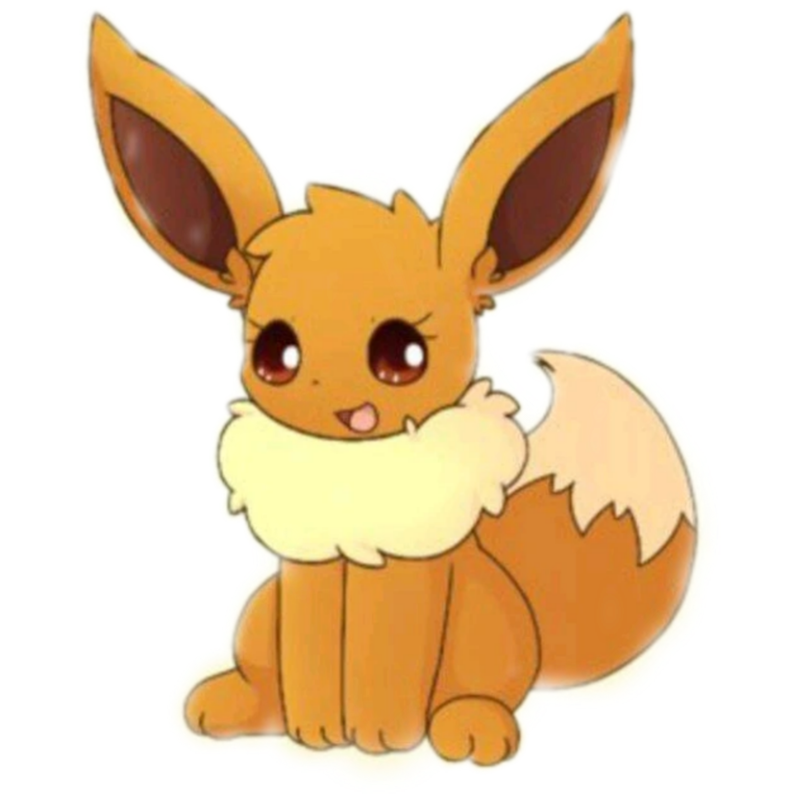
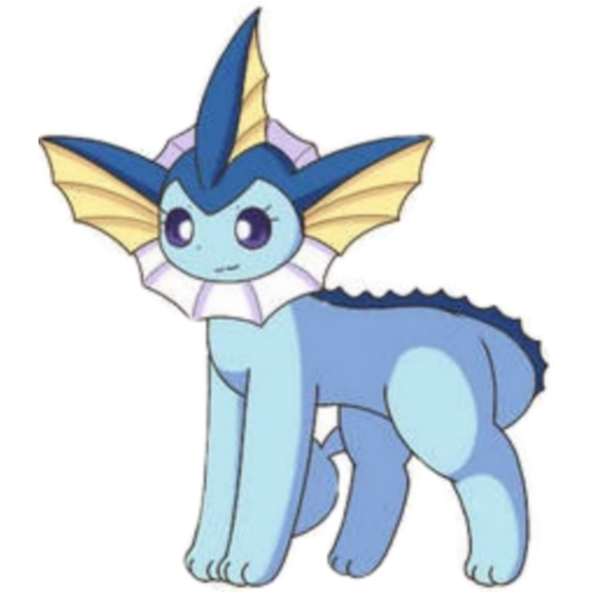
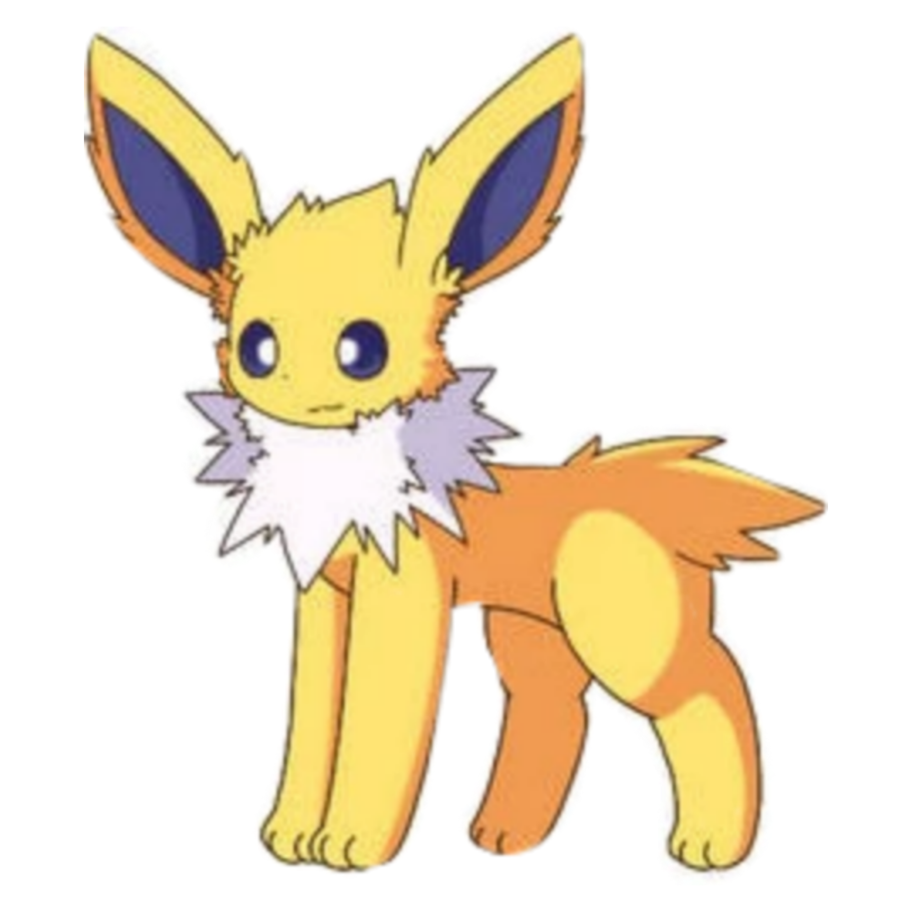
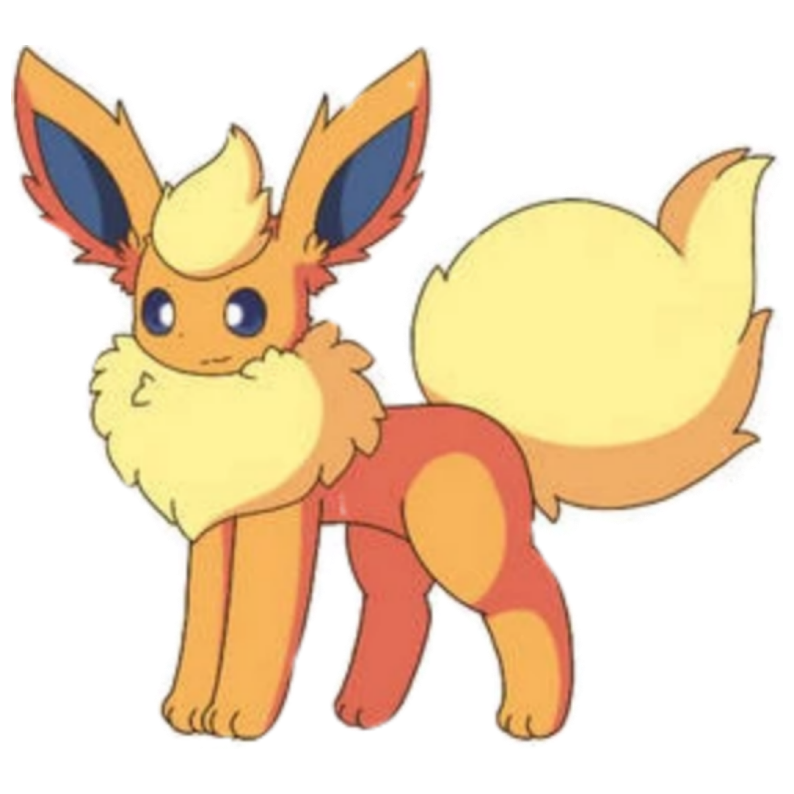
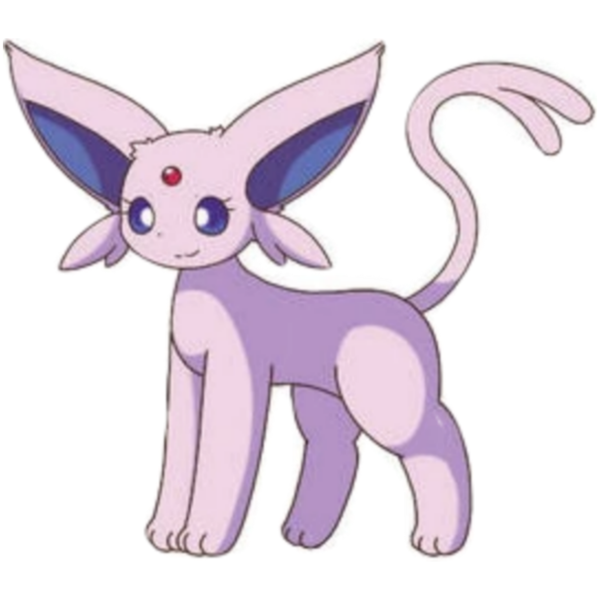
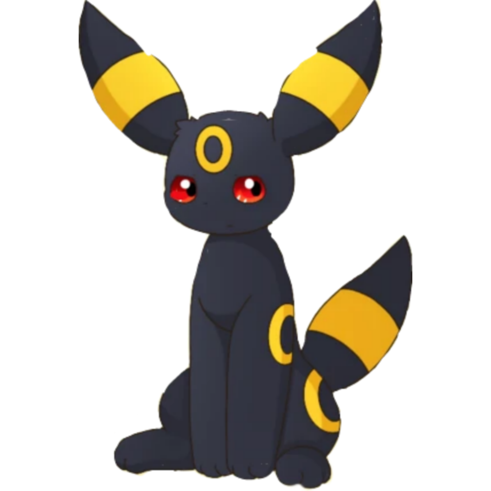
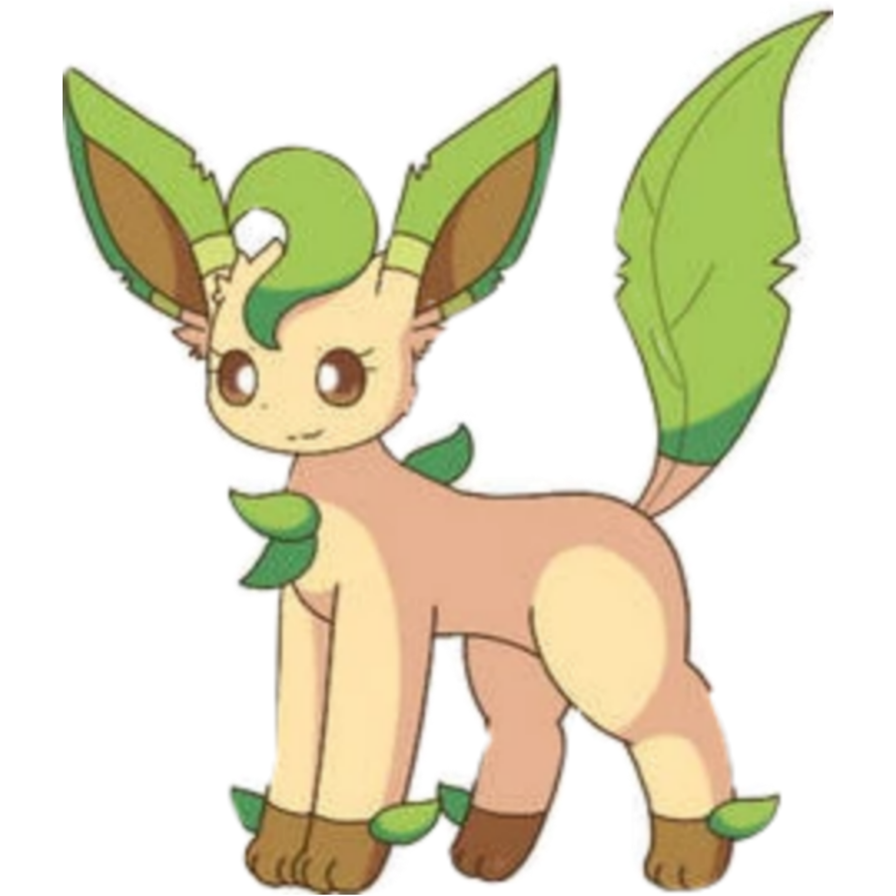
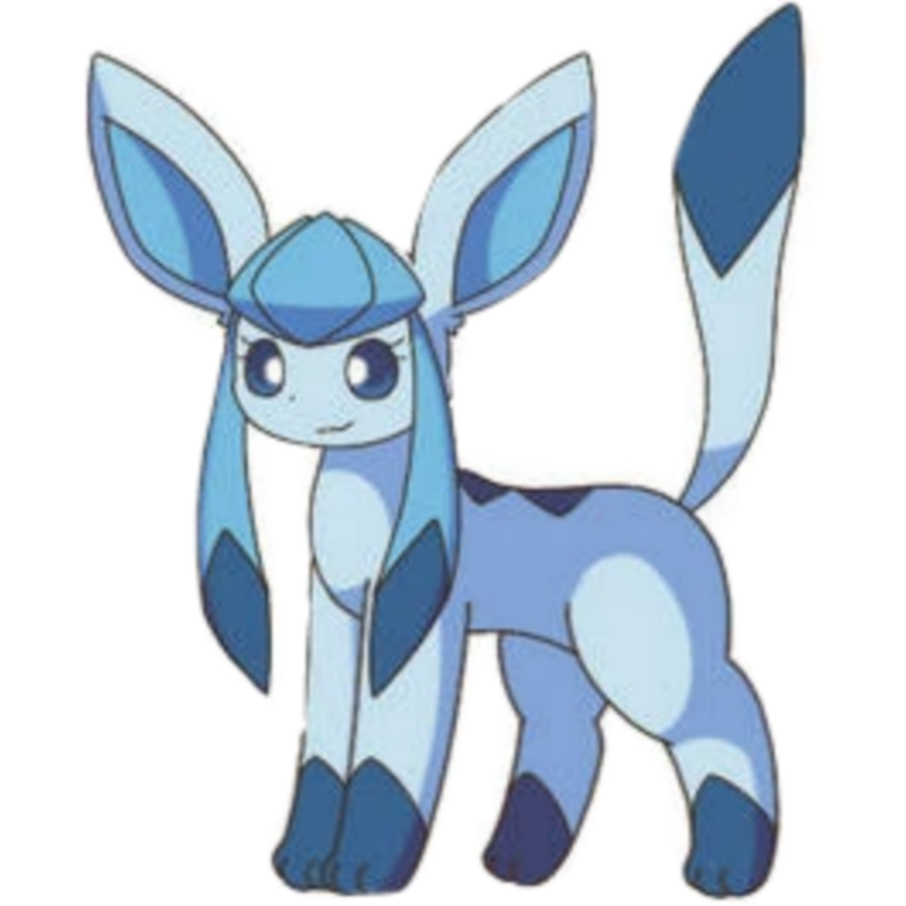

No Mundo das Eeveelutions, a diversão nunca acaba! Aqui, você encontrará uma variedade de Pokémon adoráveis, cada um com sua própria personalidade única. De Vaporeon a Sylveon, cada Eeveelution tem algo especial para oferecer. Prepare-se para embarcar em aventuras emocionantes, batalhas eletrizantes e momentos de amizade que durarão para sempre. Com seus novos amigos peludos ao seu lado, o céu é o limite no Mundo das Eeveelutions!
Eevee é um Pokémon peculiar, conhecido por sua incrível adaptabilidade e charme cativante. Seu pelo macio e cauda fofa o tornam irresistível aos olhos dos treinadores. Mas além de sua aparência adorável, Eevee possui uma personalidade versátil e curiosa. Ele está sempre ansioso para explorar novos ambientes e fazer novas amizades. Sua natureza amigável e afetuosa o torna um companheiro de equipe valioso, e sua lealdade inabalável o faz permanecer ao lado de seu treinador em todas as situações. Eevee é um símbolo de potencial ilimitado, pronto para se transformar em qualquer uma das suas oito evoluções com a orientação certa.
segue o ESMV ao clicar na imagem
Vaporeon é uma visão de elegância aquática, com seu corpo esguio e pelagem macia que brilha com gotas de água. Sua expressão tranquila reflete sua natureza gentil e compassiva. Este Pokémon aquático é mais do que apenas uma beleza; ele é um protetor dedicado de seus amigos e companheiros de equipe. Com sua habilidade de manipular a água ao seu redor, Vaporeon é capaz de criar correntes poderosas para ajudar na natação ou para defender aqueles que ama. Sua presença serena traz uma sensação de calma e segurança para qualquer equipe Pokémon.
segue o ESMV ao clicar na imagem
Jolteon é uma explosão de energia pura, com seu corpo coberto por agulhas eletricamente carregadas que parecem prontas para disparar a qualquer momento. Seus olhos brilham com uma determinação feroz e uma intensa confiança em suas habilidades. Este Pokémon elétrico é ágil e veloz, capaz de correr a velocidades incríveis e lançar ataques relâmpagos com precisão mortal. Apesar de sua natureza elétrica, Jolteon é um amigo leal e afetuoso, sempre disposto a proteger seus companheiros de equipe com sua coragem inabalável.
segue o ESMV ao clicar na imagem
Flareon é uma chama ardente em forma de Pokémon, com seu corpo envolto em chamas intensas que emanam calor e vitalidade. Seu olhar ardente revela uma paixão ardente e uma determinação inquebrável. Este Pokémon de fogo é conhecido por sua coragem e bravura, sempre disposto a enfrentar desafios com uma confiança inabalável. No entanto, por baixo de sua fachada poderosa, Flareon é um amigo carinhoso e protetor, dedicado a proteger aqueles que ama com sua força e determinação inigualáveis.
segue o ESMV ao clicar na imagem
Espeon é uma presença majestosa e misteriosa, com seu corpo envolto em uma aura psíquica que irradia sabedoria e poder. Seus olhos brilham com uma inteligência penetrante e uma compreensão profunda do mundo ao seu redor. Este Pokémon psíquico é conhecido por sua capacidade de ler mentes e prever o futuro, tornando-o um aliado inestimável em batalha e em aventuras. Apesar de sua natureza reservada, Espeon é extremamente leal aos seus amigos e treinador, disposto a sacrificar tudo para protegê-los dos perigos que possam surgir.
segue o ESMV ao clicar na imagem
Umbreon é uma sombra silenciosa na noite escura, com seu corpo envolto em uma escuridão profunda que parece absorver toda a luz ao seu redor. Seus olhos brilham com uma intensidade misteriosa e uma vigilância constante. Este Pokémon noturno é conhecido por sua natureza reservada e protetora, agindo como um guardião silencioso durante as horas mais escuras da noite. Apesar de sua aparência intimidadora, Umbreon é extremamente leal aos seus amigos e treinador, disposto a arriscar tudo para garantir sua segurança e bem-estar.
segue o ESMV ao clicar na imagem
Leafeon é uma manifestação da exuberância natural, com seu corpo adornado com folhas verdes exuberantes que parecem dançar ao vento. Sua presença tranquila e serena traz uma sensação de paz e harmonia para qualquer ambiente. Este Pokémon de planta é conhecido por sua bondade e sua conexão profunda com a natureza, protegendo os Pokémon da vida selvagem com sua força e coragem. Apesar de sua aparência suave, Leafeon é um lutador feroz quando necessário, disposto a defender seus amigos com unhas e dentes.
segue o ESMV ao clicar na imagem
Glaceon é uma beleza gélida, com seu corpo coberto por cristais de gelo que brilham com uma luz fria e misteriosa. Sua presença calma e tranquila é como uma brisa fresca em um dia quente de verão. Este Pokémon de gelo é conhecido por sua dedicação aos seus amigos e sua habilidade de criar barreiras de gelo para protegê-los dos perigos que possam surgir. Apesar de sua aparência fria, Glaceon possui um coração caloroso e uma lealdade inabalável, disposto a enfrentar qualquer desafio para garantir a segurança e o bem-estar daqueles que ama.
segue o ESMV ao clicar na imagem
Sylveon é uma visão graciosa de beleza e elegância, com laços de fita flutuando ao seu redor e uma aura de graça radiante. Seus olhos expressivos revelam uma gentileza e empatia incomparáveis, refletindo sua natureza carinhosa e protetora. Este Pokémon de fada é conhecido por sua habilidade de acalmar as emoções turbulentas e trazer conforto para aqueles que estão em seu redor. Sylveon é um amigo leal e confiável, sempre pronto para oferecer apoio e proteção a seus companheiros de equipe e treinador. Sua presença encantadora ilumina até mesmo os dias mais sombrios, trazendo alegria e esperança para todos que têm a sorte de conhecê-lo.
segue o ESMV ao clicar na imagem